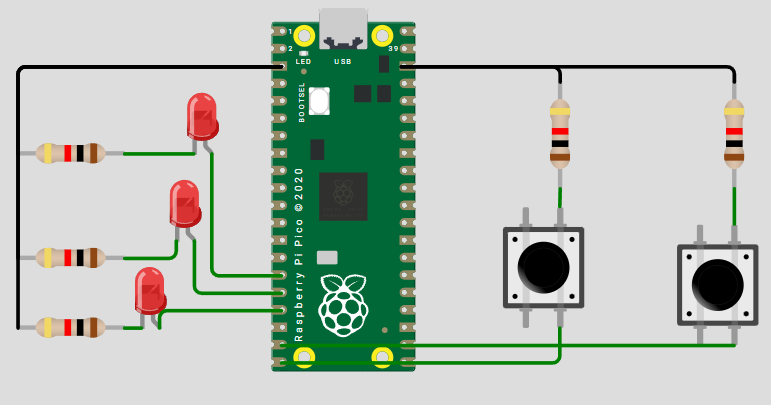

Compuertas Lógicas con Botones y LED (Raspberry Pi Pico / Pico 2)
Implementación de compuertas lógicas (AND, OR, NOT, XOR, NAND, NOR) usando dos botones como entradas digitales y un LED como salida.
Los botones usan pull-up interno (activos en bajo al presionar), y se incluye un debounce por software.
1) Resumen
- Nombre del proyecto: Compuertas Lógicas con GPIO
- Autor: Antonio Martínez
- Curso / Asignatura: Sistemas Embebidos
- Fecha: 02/09/2025
- Descripción breve: Se mapean dos entradas con botones a una salida LED que refleja la operación lógica seleccionada.
Información del proyecto
- Lenguaje: C (Pico SDK)
- MCU: Raspberry Pi Pico / Pico 2 (RP2040)
- Librerías:
pico/stdlib.h,hardware/gpio.h - Entradas activas en: nivel bajo (por pull-up interno → al presionar = 0 lógico)
- Salida LED activa en: nivel alto
Material utilizado
- Raspberry Pi Pico / Pico 2
- 1 LED (salida) + 1 resistencia 220–330 Ω
- 2 botones de pulso (entradas)
- Cables, protoboard y cable USB
- PC con VS Code + CMake + Pico SDK
2) Objetivos
- Configurar GPIO como entradas con
pull_upy como salidas para LED. - Implementar compuertas lógicas básicas con entradas discretas.
- Manejar el rebote de botones por software de forma simple.
- Proveer una base extensible para probar distintas compuertas.
3) Circuito
- Entradas (botones):
BTN_A→ GPIO 14 — congpio_pull_up(BTN_A)BTN_B→ GPIO 15 — congpio_pull_up(BTN_B)- El otro terminal de cada botón va a GND
- Salida (LED):
LED_OUT→ GPIO 13- LED con resistencia en serie (220–330 Ω), ánodo al GPIO y cátodo a GND (salida activa-alta)
- Tierra común: compartir GND entre todos los elementos. 
4) Código
Cambia
GATE_SELECTEDpara elegir la compuerta a evaluar.
```c
#include <stdio.h>
#include <stdbool.h>
#include "pico/stdlib.h"
#include "hardware/gpio.h"
// ========= Mapeo de pines =========
#define BTN_A 14
#define BTN_B 15
#define LED_OUT 13
// ========= Selección de compuerta =========
// Opciones: AND, OR, NOT_A, XOR, NAND, NOR
typedef enum { AND, OR, NOT_A, XOR, NAND, NOR } gate_t;
#define GATE_SELECTED AND // <- Cambia aquí la compuerta a evaluar
// ========= Parámetros de debounce =========
#define DEBOUNCE_MS 20
static absolute_time_t next_read_time = {0};
// Lee botón con pull-up y entrega 0/1 lógico (1 = presionado)
static inline bool read_button_active_low(uint pin) {
// Con pull-up: gpio_get(pin) == 1 (no presionado), 0 (presionado)
return gpio_get(pin) ? 0 : 1;
}
static inline bool debounce_ready(void) {
return absolute_time_diff_us(get_absolute_time(), next_read_time) <= 0;
}
static inline void debounce_arm(void) {
next_read_time = make_timeout_time_ms(DEBOUNCE_MS);
}
static bool logic_eval(gate_t gate, bool a, bool b) {
switch (gate) {
case AND: return (a && b);
case OR: return (a || b);
case NOT_A: return (!a); // ignora B
case XOR: return (a ^ b);
case NAND: return !(a && b);
case NOR: return !(a || b);
default: return false;
}
}
int main(void) {
stdio_init_all();
// Configuración de pines
gpio_init(LED_OUT);
gpio_set_dir(LED_OUT, true);
gpio_put(LED_OUT, 0);
gpio_init(BTN_A);
gpio_set_dir(BTN_A, false);
gpio_pull_up(BTN_A);
gpio_init(BTN_B);
gpio_set_dir(BTN_B, false);
gpio_pull_up(BTN_B);
debounce_arm();
while (true) {
if (!debounce_ready()) {
sleep_ms(1);
continue;
}
// Lectura de entradas (1 = presionado, 0 = suelto)
bool A = read_button_active_low(BTN_A);
bool B = read_button_active_low(BTN_B);
// Evaluación lógica
bool Y = logic_eval(GATE_SELECTED, A, B);
// Actualizar salida
gpio_put(LED_OUT, Y ? 1 : 0);
// Rearmar debounce
debounce_arm();
}
return 0;
}
5) Explicación del programa
a) Definiciones y mapeo de pines
- Cancha / Entradas:
BTN_A(GPIO 14),BTN_B(GPIO 15), ambos con pull-up interno (activos en bajo). - Salida / Puntuación:
LED_OUT(GPIO 13), activo en alto (enciende con1).
b) Variables clave (estado del juego)
- Entradas A, B: se leen con la función
read_button_active_low(), que invierte la lógica degpio_get()para que 1 = presionado. - Compuerta seleccionada:
GATE_SELECTEDde tipogate_t(AND / OR / NOT_A / XOR / NAND / NOR). - Debounce:
DEBOUNCE_MSdefine la ventana mínima entre lecturas estables.
c) Inicialización de GPIO y botones
- LED como salida y en bajo al inicio (
gpio_put(LED_OUT, 0)). - Botones como entrada con
gpio_pull_up(). - La inversión lógica se concentra en
read_button_active_low()para mantener el código limpio.
d) Bucle principal
- Cada DEBOUNCE_MS (20 ms por defecto) se muestrean A y B.
- Se evalúa
logic_eval(GATE_SELECTED, A, B). - Se escribe la salida en
LED_OUT.
e) Tablas de verdad (referencia)
Supuesto: 1 = botón presionado; 0 = suelto.
| A | B | AND | OR | XOR | NAND | NOR |
|---|---|---|---|---|---|---|
| 0 | 0 | 0 | 0 | 0 | 1 | 1 |
| 0 | 1 | 0 | 1 | 1 | 1 | 0 |
| 1 | 0 | 0 | 1 | 1 | 1 | 0 |
| 1 | 1 | 1 | 1 | 0 | 0 | 0 |
Para NOT_A (usa solo A):
| A | NOT_A |
|---|---|
| 0 | 1 |
| 1 | 0 |
6) Consideraciones de hardware
- Resistencia del LED: 220–330 Ω en serie.
- Botones con pull-up: el otro terminal a GND.
- Común de GND: imprescindible para referencia de niveles.
- Rebotes: el debounce por soft (20 ms) suele ser suficiente. Si observas parpadeos, sube a 30–40 ms o añade filtro RC.
- Polaridad del LED: si está invertido (cátodo al GPIO), deberás invertir la lógica de
gpio_put().